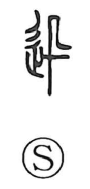

迅

Kun: hayai, hageshii | On: jin
swift ・ rapid ・ intense
Explanation
迅 is a phono-semantic character. The left side is the movement sign 辶, which gives the idea of going or speed, while the right side is 卂, an ancient graph explained in the Shuowen as “flying swiftly,” derived from the form of 飛 ‘to fly’ with the wings left unseen—an image of a body cutting through the air too fast for its wings to be distinguished. Later understanding connects this shape with the falcon 隼, emblem of extreme speed. With 卂 lending the sound and the bird-in-flight image, and 辶 supplying the motion sense, the character came to mean swift, rapid, and by extension, intense.